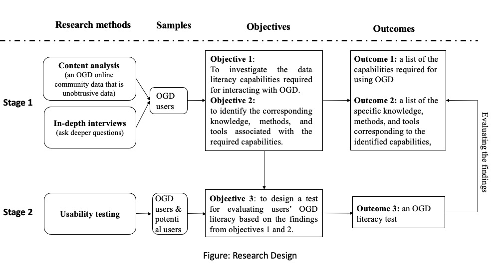

FANGHUI XIAO
Research Projects
My current research agenda highlights two of my academic passions: 1) human data interaction and human-computer interaction in the open data domain, and 2) data management. In the future, my plan is to 1) improve OGD use to augment civic engagement through social support, including enhancing the confidence and trust in OGD by designing a trust rating system and engaging citizens to access OGD by adopting social media platforms, and 2) promote data equality by strengthening users' OGD literacy skills.

1.Human Data Interaction (HDI) and Human-computer Interaction (HCI)
Project 1: Categorizing Open Government Data Users by Exploring their Challenges and Proficiency (In Progress)
Open Government data

Abstract: Developing user persona has been a crucial aspect of human-centered system design for decades as it helps in understanding and segregating users based on their prominent characteristics. However, such a technique has not been applied in developing and improving systems for supporting open government data (OGD) users. Therefore, this study explores OGD users' characteristics and creates relevant personas for them. Open coding-based content analysis and k-means clustering were performed on posts of an online community managed by a U.S. local-level OGD portal, where users' characteristics such as purpose, challenges, and proficiency in civic data domain knowledge and computational skills were used as features for clustering. Through manually analyzing the clusters, we identified three personas with their distinct behavior patterns based on their proficiency. The proposed personas can facilitate better personalized informational and technological support to OGD users.
Project 2: Toward a Conceptual Model for Users' Online Open Government Data Interaction (Dissertation Project)
Open Government data
Xiao, F., (2021). Toward a conceptual model for users' online open government data interaction. In Proceedings of the 2021 Conference on Human Information Interaction and Retrieval (CHIIR '21). Association for Computing Machinery, New York, NY, USA, 355~358.
My dissertation proposal won Mary Margaret Corbett Memorial Award for best PhD LIS dissertation proposal from the University of Pittsburgh
Abstract: The rapid development of open government data (OGD) and the increasing attention on data use/reuse have stimulated many studies on data-related issues. The extant studies show that even though OGD portals have been rapidly developed in this age of data, there are still various challenges when users interact with data. Therefore, this study attempts to identify the contextualized challenges, understand user behaviors when interacting with OGD, and ultimately, propose solutions that can assist users in using OGD. Furthermore, aiming to ameliorate the issues that data is hard to find and to be understood, the methods of content analysis and semi-structured interviews are adopted. Also, the research sites accessed are two local level OGD portals that are closely connected with local organizations, neighborhoods, and communities, which have a direct impact on a citizen's daily life. The results of this project are expected to contribute to the fields of Human Information/Data Interaction, Human-computer Interaction and OGD Use.
Project 3: Understanding Users' Accessing Behaviors to Local Open Government Data via Transaction Log Analysis
Open Government data
Xiao, F., Wang, Z., & He, D. (2020). Understanding users' accessing behaviors to local Open Government Data via transaction log analysis. Proceedings of the Association for Information Science and Technology, 57(1), e278.
Abstract: The rapid development of Open Government Data (OGD) and the increasing attention on data use/reuse have stimulated many studies on data-related issues. However, the findability of OGD is still one of the major challenges. Aiming to ameliorate the situation that "data is hard to find", this paper examines OGD users' needs and accessing behaviors when interacting with local OGD portals. Transaction log analysis and web content mining were used in order to obtain insights from large groups of OGD users in an unobtrusive manner. Through analyzing transaction log data from three local OGD portals, including Open Data Philly (opendataphilly.org), Western Pennsylvania Regional Data Center (wprdc.org) and Analyze Boston (data.boston.gov), our study shows that users relied on different channels to enter local OGD portals, and such channels have different impacts on user success in finding the sought-after data. We also find that OGD users prefer browsing over searching when inside the portals, the utilization of different browsing entries, and users' data needs.
Project 4: Challenges and Supports for Accessing Open Government Datasets: Data Guide for Better Open Data Access and Uses (2019)
Open Government data
Xiao, F., He, D., Chi, Y., Jeng, W., & Tomer, C. (2019). Challenges and supports for accessing open government datasets: Data guide for better open data access and uses. In Proceedings of the 2019 Conference on Human Information Interaction and Retrieval (pp. 313-317). ACM.
This paper won the Best Short Paper Award in the 2019 Conference on Human Information Interaction and Retrieval (CHIIR2019)
Abstract: increased public trust, civic engagement, and accountable administrations. While there is a myriad of benefits, the existing literature suggests that many open government datasets lack accessibility and usability for diverse users. This study seeks to explore what contextual information users require when they access these datasets. Using mixed methods, we aim to discover the challenges of accessing data, and the necessary contextual information needed by the users to overcome these challenges. As the outcome of this study, we propose a framework called "Data Guides", which is composed of the identified important contextual information. In future work, we will test the effectiveness of the Data Guide in aiding users' accessing and understanding open government data.
Project 5: Task-based human-structured research data interaction: A discipline independent examination (2020)
Research Data
Xiao, F., Ma, R., & He, D. (2020). Task-based human-structured research data interaction: A discipline independent examination. Proceedings of the Association for Information Science and Technology, 57(1), e308.
Abstract: With the development of open data movement, an increasing number of structured research datasets (SRD) are available online due to the successful data infrastructure and the strong demand for sharing data. Yet there still lacks a thorough, systematic investigation of researcher-SRD interactions, which is important to understand users' needs, challenges, and expectations. Our work extends from the current scholarship and proposes a task-based approach to examining how researchers interact with SRD, without considering individual disciplines. This study identifies two types of research tasks, the data-driven tasks and model-driven tasks, and also proposes a framework for researcher-SRD interaction. Our findings will contribute to the research field of human data behaviors.
Project 6: What is a good visualization for digital humanities researchers? An exploratory study.
Research Data
Ma, R., & Xiao, F. (2021). What is a good visualization for digital humanities researchers? An exploratory study. Proceedings of the Annual Meeting of the Association for Information Science and Technology 58 (1).
Visualization in digital humanities (DH) has developed into a charged topic as increasing numbers of humanities researchers begin to work with machine-readable data. The current research literature on DH visualization has primarily approached the subject from a theoretical perspective, arguing the humanistic visualization should fundamentally differ from scientific visualization to represent the distinct nature of humanities data and inquiries. However, few studies have tried to empirically understand what it means to be a good visualization for humanities researchers and practitioners. This study aims to bridge this research gap by offering an exploratory investigation into researchers' perceptions on visualization, particularly how they evaluate a visualization in humanities research. Through 10 semi-structured interviews with humanities scholars engaging in digital work, our study demonstrates that perceptions of a quality visualization among the humanities researchers are closely related to researchers' purposes of using visualization and their self-confidence in visualization knowledge and skills. This study serves as a baseline for future empirical research on DH visualization and potentially informs the best practices for humanistic visualizations.
2.Data Science
Project 7: Investigating Metadata Adoptions for Open Government Data Portals in US Cities
Data Management
Xiao, F., Jeng, W., & He, D. (2018). Investigating metadata adoptions for open government data portals in US cities. Proceedings of the Association for Information Science and Technology, 55(1), 573-582.
Open government data (OGD) is a valuable resource for both policy transparency and government accountability. All levels of the United States government are working hard to promote open data and its portals. However, there is still a lack of studies on local-level OGD portals in the United States, particularly on the quality of metadata adopted by these portals. By examining 200 US cities, a list of 112 local-level portals is sampled and we investigate the current usages of open data platforms for building local-level OGD portals. This study further investigates and discusses the adoption and potential issues of metadata on those OGD portals. Our result findings discuss the platform distributions among US local-level OGD portals, and also highlight several critical issues associated with metadata on the portals. We anticipate the results will inspire further studies on identifying solutions to improve the metadata and enhance the usability of open government data portals.
Project 8: Emerging Roles for Optimizing Re-Use of Open Government Data
Data Management
Xiao. F., Lyon. L, Zou. N., and Gradeck. R. (2018). Emerging Roles for Optimising Re-Use of Open Government Data. International Journal of Digital Curation 13 (1). DOI: https://doi.org/10.2218/ijdc.v13i1.609
This paper describes a small-scale study to investigate the missions, services, and operational tasks provided by four open government data (OGD) centers in the US and UK. The methodology used was an analysis of the textual content of the data center websites to identify the common elements of the mission and services. The range of data center services and tasks identified and extracted from the websites could be classified into five common categories: Availability, Understandability, Technical Help, Social Engagement, and Improve User Data Literacy. Three new specialists OGD roles were proposed: Data Interpreter, Data Consultant, and Data Visual Assistant. In parallel with existing research data policies and guidelines, these three specialist OGD roles could be extended and applied across other open data portals and domain-based data centers, including research data repositories, to optimize the delivery of open data, to facilitate greater value from data sharing, to maximize the understanding of complex data and to minimize the subsequent misuse of data.
Project 9: Reducing Data Inequality by Improving Open Government Data Users' Data Literacy (In Progress)
Data Literacy

With the explosive growth of open government data (OGD), some studies have detected the rise of a new issue: data inequality. They have observed that there is "a growing gap between those who can work effectively with data and those who cannot" (D'Ignazio, 2017). A thorough review of the literature on the challenges of interacting with OGD confirms that lacking the necessary knowledge or skills is a crucial factor that inhibits users from accessing (Liu & Jagadish, 2009) and using data (Martin, 2014). Therefore, by collaborating with a local-level OGD portal, we plan to fill this gap by exploring the capabilities required for OGD literacy, proposing corresponding knowledge, methods, and tools, and finally developing a test for evaluating users' OGD literacy to ultimately facilitate users' interaction with data. This project aims to improve the data literacy of OGD users, to increase awareness and use of OGD, and finally to help address the issue of data inequality.
3.Intersection of HCI and Data Management
Project 10: Contemporary Chinese Village Gazetteer Data Project (In Progress)
HCI
Data Management
Research Data
Zhang, H., Zhang, Y., Xin, Q., & Xiao, F. (2020). Contemporary Chinese Village Gazetteer Data Project: From Books to Data. In Proceedings of the ACM/IEEE Joint Conference on Digital Libraries in 2020 (pp. 559-560).
The Contemporary Chinese Village Gazetteer Data Project (CCVG Data) is a project conducted by the East Asian Library (EAL) of the University Library System (ULS) at the University of Pittsburgh. In this project, my primary responsibility is to understand users' experiences when interacting with CCVG data to improve usability. I led the investigations on exploring users' expectations of the data, the barriers to using it in their research, and the desired functionalities provided by CCVG Data. A 40-page User Guide/User Dictionary that offers valuable descriptions of the data categories was created as the outcome of the interviews. To further understand users' challenges and improve the usability of the data, I designed an online survey that will pop up when users are about to depart from the website. All the feedback contributes to the design of the database system and interface. Regarding data management, I facilitated the data dictionary creation and will help develop metadata for the CCVG datasets. Also, I proposed critical data management methods and principles to EAL, and most of them were adopted. E.g., documenting all the processes of database development.
4.Human Information Interaction (HII)
Project 11: Connections and disconnections between online health information seeking and offline consequences
Health Information
Chi, Y., He, D., Xiao, F., & Zou, N. (2020). Connections and disconnections between online health information seeking and offline consequences. In Proceedings of the 14th EAI international conference on pervasive computing technologies for healthcare (pp. 73-84).
Online Health Information Seeking (HIS) has become pervasive with critical impacts on consumers' health. Yet, little is known about the connections between consumers' online HIS process and subsequent offline behaviors. To fill this gap, we conducted semi-structured interviews by adopting the Critical Incident Technique to understand the real-world search experiences from 24 consumers. We characterized the online HIS around source selection behaviors, information needs, and search starting point, then further analyzed their impacts on offline emotion change and decision-making. Specifically, we identified that self-diagnosis is a common need for online HIS, where search engines are dominantly used as the starting point. More surprisingly, although mostly being viewed as helpful, online HIS might lead to consumers' extremely negative emotions and decisions. These findings deepen the understanding of consumer-centered health information seeking behaviors and provide insights for designing better interactive technologies to facilitate desirable online-offline transitions and thus promoting the outcomes of healthcare.